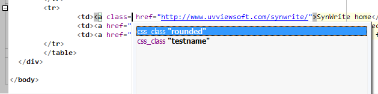

Plugin "HTML Class Complete"
This is auto-completion plugin for CudaText.
It allows to perform auto-completion of CSS class names, while editing HTML "class" and "id" attributes.
For ex:
- If HTML file links to "main.css" and "main.css" defines N class names
(for specific tags, or general names for all tags), then HTML editor will show you
these N names while you call auto-completion after class= attrib.
- Same for id= attribs, if css-file contains such id's.

CSS may be linked in such ways:
- with <link type="text/css" href="main.css" rel="stylesheet">
- with <style type="text/css"> styles here... </style>
- with <style type="text/css"> @import "main.css"; </style>
About
Author: Alexey T.
License: MPL 2.0